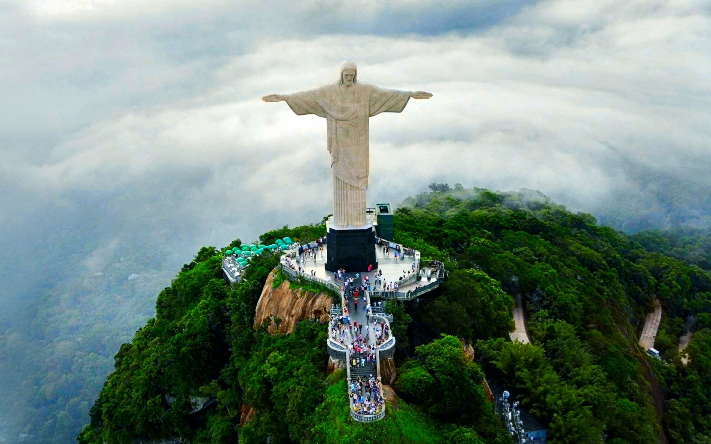

Statua Chrystusa Zbawiciela (port. Cristo Redentor = Chrystus Odkupiciel) – 38-metrowy pomnik Jezusa Chrystusa wzniesiony na szczycie granitowej góry Corcovado w Rio de Janeiro w Brazylii. .Autorem głowy posągu jest rumuński rzeźbiarz Gheorghe Leonida.Rzeźbę zbudowano we Francji i przewieziono do Rio de Janeiro, a przed umieszczeniem na szczycie wzgórza obłożono steatytem. Odsłonięcie nastąpiło 12 października 1931 r. Dokonał tego projektant oświetlenia pomnika Guglielmo Marconi, który włączył je z jachtu przycumowanego w porcie we włoskiej Genui. Uroczystość tę powtarzano jeszcze dwa razy. Za drugim razem gdy zainstalowano nowe oświetlenie, włączenia dokonał papież Paweł VI, a za trzecim z okazji 50. rocznicy budowy 12 października 1981 uświetnił włączeniem papież Jan Paweł II. W 1980 roku, przed pielgrzymką do Rio papieża Jana Pawła II, umyto figurę Chrystusa. Statua ta jest również jednym z symboli Rio de Janeiro.
| Linki(dowiedz się więcej) | Koloseum | Chichen Itza | Machu Picchu |
| -------- | Petra | Pomnik Chrystusa Odkupiciela | |
| -------- | Wielki mur chiński | Tadż mahal |